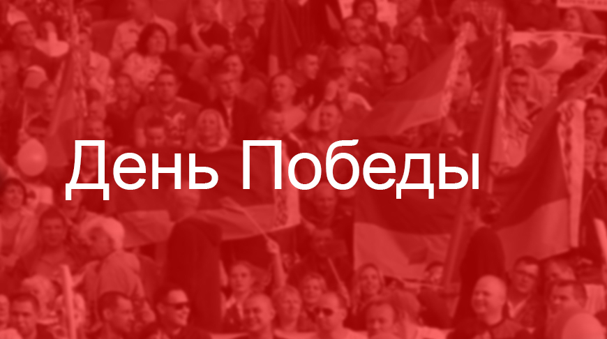

ㅤㅤНа территории Беларуси германские захватчики вводили «новый порядок» — систему военно-полицейских, политических, идеологических, экономических мероприятий, направленных на установление и поддержку оккупационного режима. Идейной основой такого порядка стала человеконенавистническая «расовая теория» нацистов. Согласно этой теории утверждались превосходство арийской расы над всеми другими, необходимость расширения «жизненного пространства» для немцев и их «право» на мировое господство.
ㅤㅤОтношение оккупантов к белорусам было определено в плане «Ост». Им предусматривалось выселить 75 % белорусского населения с занимаемой территории, а остальные 25 % подлежали онемечиванию. Цыган и евреев, живших в Беларуси, ожидало полное истребление. В крупных городах Беларуси планировалось создать поселения для привилегированных слоев немецкого общества. В них на каждого человека «высшей германской расы» предполагалось оставить по два представителя «низшей расы» из местного населения.
ㅤㅤОккупанты грабили и жгли города и сёла. В Германию вывозились промышленное оборудование, сырье, лес и скот, культурно-исторические ценности. Уцелевшие предприятия передавались немецким фабрикантам и заводчикам, а земля — колонистам, бывшим помещикам. Все рабочие и служащие должны были явиться на свои рабочие места, а безработные — отметиться на бирже. Людей заставляли работать по 12—14 часов в сутки. Тех, кто отказывался, заключали в концлагеря, а инициаторов протестов расстреливали. Крестьян облагали непосильными налогами и сборами, взыскание которых сопровождалось карательными мерами.
ㅤㅤГлавным средством осуществления своих целей оккупанты сделали политику геноцида. Она была направлена на полное или частичное уничтожение групп населения по расовому, национальному, этническому, политическому либо религиозному признакам. Человек мог стать жертвой геноцида по разным мотивам: за принадлежность к коммунистам, лицам еврейской национальности, за любое неподчинение оккупационным властям. Смерть угрожала сотням тысяч людей. С германских солдат и офицеров снималась всякая ответственность за преступления на оккупированной территории.
ㅤㅤОдним из проявлений геноцида в отношении населения Беларуси являлось уничтожение евреев. Еврейское население Беларуси сгонялось в специальные места проживания — гетто. В Беларуси было создано свыше 110 гетто. Крупнейшие из них располагались в Минске, Бресте, Барановичах, Гродно, Гомеле. Теснота, голод, антисанитарные условия, тяжелый труд, издевательства, погромы, массовые убийства сопровождали жизнь в гетто. На свою одежду евреев заставили нашить специальный знак в виде шестиконечной звезды. В Минском гетто приняли смерть около 100 тыс. евреев, в том числе привезенных из Австрии, Германии, Польши и Чехословакии. Для обозначения массового истребления нацистами еврейского населения Европы в период Второй мировой войны используется термин «Холокост» (от греческого holokaustus — сожженный целиком). Всего за годы Великой Отечественной войны на белорусской земле погибло свыше 600 тыс. евреев, в том числе около 90 тыс. выходцев из стран Европы.
ㅤㅤВ послевоенное время в Израиле было принято решение о создании Национального мемориала Катастрофы и героизма Яд Ваше´м (в переводе с иврита — «память и имя») и увековечении памяти Праведников народов мира. Так называют тех людей нееврейского происхождения, которые в годы Второй мировой войны спасали евреев. Их имена высекаются на Стене почета на Аллее Праведников в Иерусалиме. В Республике Беларусь насчитывается более 800 Праведников народов мира. Аллея Праведников народов мира создана и в Минске. В память о погибших на месте Минского гетто установлена скульптурная композиция «Яма».
ㅤㅤ
ㅤㅤ
ㅤㅤ
Еврейская девочка из гетто (на одежде — желтая шестиконечная звезда)
ㅤㅤВ Беларуси было создано более 260 лагерей смерти, пять из которых располагались в Минске и недалеко от него. Один из таких лагерей — Тростенец, который по количеству уничтоженных (206 500 человек) находится на печальном четвертом месте после Освенцима (Аушвица), Майданека и Треблинки. Среди погибших там — узники Минского гетто, лица еврейской национальности, вывезенные из европейских стран, пленные красноармейцы, минские подпольщики и др. Людей расстреливали возле заранее вырытых рвов, а их тела закапывали и утрамбовывали гусеничным трактором.
ㅤㅤНа месте нацистского лагеря смерти Тростенец создан мемориальный комплекс. В его основу положена идея духовного единства людей разных вероисповеданий и национальностей, которых так жестоко лишили жизни. В мемориальном комплексе торжественно открыты монумент «Врата памяти» и памятник «Массив имен», посвященные тем, кто принял тут мученическую смерть. Тростенецкий мемориал является символом осуждения античеловеческой политики геноцида в отношении мирного населения.
ㅤㅤОккупанты проводили политику устрашения мирного населения Беларуси и учиняли многочисленные расправы над ним. Даже детей заставляли выполнять непосильную для них физическую работу, морили голодом, заключали в лагеря. Часто белорусских детей, особенно из детских домов, использовали в качестве доноров для обеспечения кровью раненых немецких солдат. В донорских лагерях детей кормили гнилой свеклой и похлебкой из костной муки, а у тех, кто еще держался на ногах, забирали кровь, сколько было возможно.
ㅤㅤПервый на Европейском континенте мемориальный комплекс, посвященный детям — жертвам войны, был открыт в поселке Красный Берег (Жлобинский район Гомельской области). Здесь оккупантами был создан сборный пункт для детей в возрасте от 8 до 14 лет, которых отправляли в Германию в качестве доноров.
ㅤㅤНа сегодняшний день установлены имена и фамилии только 15 из 1990 вывезенных, остальные остаются неизвестными. «Красный Берег» открывается бронзовой скульптурой девочки со вскинутыми над головой руками. За фигурой девочки — «мертвый класс» с пустыми белыми бетонными партами и школьной доской. На партах и возле ног худенькой девичьей фигурки посетители оставляют цветы и конфеты. А на каменной доске размещен текст предсмертного письма 15-летней девочки своему отцу.
ㅤㅤЗа время оккупации под видом борьбы против партизан оккупанты провели в Беларуси более 140 карательных экспедиций. После них целые районы превращались в «зоны пустыни». 22 марта 1943 г. были сожжены заживо все жители деревни Хатынь под Логойском. В огне погибли 149 человек, в том числе 75 детей, младшему из которых было семь недель. Трагическую судьбу Хатыни, сожженной вместе с жителями, разделили 628 деревень, 186 из которых так и не были восстановлены после войны. Хатынь стала символом трагедии белорусского народа в годы войны.
ㅤㅤ
Нарукавный знак остарбайтера
ㅤㅤСоветских людей, особенно молодежь, насильственно вывозили на каторжные работы в Германию. Людям не позволяли даже попрощаться с близкими, не давали ничего брать с собой. Их вывозили в товарных вагонах. По нескольку дней они не получали еды и воды, а если их и кормили, то по нормам, установленным для советских военнопленных. Тех, кто уклонялся от отправки, расстреливали.
ㅤㅤВ Германии таких людей называли остарбайтерами — восточными рабочими, лишив их не только имени, но и национальности. Они вынуждены были носить специальный нарукавный знак. Оказавшись на каторге, люди гибли от голода, болезней, издевательств, тяжелого труда. За время оккупации из Беларуси на принудительные работы в Германию и захваченные ею страны было вывезено почти 385 тыс. человек, в том числе более 24 тыс. детей. В основном забирали молодежь и наиболее трудоспособное население. По неполным данным, после разгрома нацистской Германии в Беларусь вернулось только 160 тыс. человек.
ㅤㅤТаким образом, германский оккупационный режим на территории Беларуси представлял собой человеконенавистническую политику, направленную на ликвидацию советского строя, угнетение и уничтожение людей.